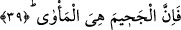

39. Şüphesiz Cehennem tek barınaktır.
“el-Me’vâ” kelimesinden maksad, “onun sığınağı” demektir. İşte böyle bir kimseye
Cehennem tek barınaktır. Âsi olan mümin oradan çıkacak ama kâfir çıkamayacaktır.
Dolayısıyla buradaki ifâde kâfir hakkındadır. Aynı zamanda bu ifâde, bir öğüt ve
uyandırıcı bir ibrettir. “el-Me’vâ” kelimesinin başındaki “el” takısı izâfet yerindedir.
Çünkü oraya kimin gireceği bilinmektedir. Bu, bahsi geçen azgın kişi olacaktır. Bu
kelimedeki “el” takısının izâfet yerine geçmesi, tıpkı “gözü sakın” cümlesinde olduğu
gibidir. Bu cümlede “göz” kelimesi ile “gözünü” anlamı kasdedilmiştir. Çünkü hiç
kimse başkasının gözünü kapatamayacağına göre “el” takısı izâfet yerindedir. Arapça
dilbilgisi kurallarına göre isim cümlesinde haber, cümle hâlinde olursa o haberi
mübtedâya bağlayan bir bağ bulunmalıdır. İşte buradaki “el” takısı o bağın yerini
almıştır. Çünkü cümlede anlamı yanlış yapacak herhangi bir durum yoktur. Bu tür
yerlerde sözünü ettiğimiz bağa bundan dolayı ihtiyaç yoktur.
40. Rabbinin makamından korkan ve nefsini kötü arzulardan uzaklaştıran için,
Mebde ve meadı yâni işin başlangıcının ne olduğunu ve sonunun nereye varacağını
bildiği için “Rabbinin makamından korkan”; o en büyük belânın ortaya çıktığı ve
insanın önceden yapıp ettiklerini hatırladığı gün kendi işine malik olan Rabbinin
huzurunda durmaktan korkan “ve nefsini kötü arzulardan uzaklaştıran için,”
41. Şüphesiz Cennet yegane barınaktır.
Burada biz “mebde ve meadı yâni işin başlangıcının ne olduğunu ve sonunun nereye
varacağını bildiği için “ şeklinde bir takdirde bulunduk. Çünkü hesab vermek için
Allah’ın huzurunda durmaktan korkmak, bunu önceden bilmeyi gerektirir. Bazı
tefsirlerde “makam” kelimesinin “durmak” anlamında mimli masdar veya “durma yeri”
anlamında ism-i mekan olduğu söylenmektedir. Yani bu kelimeyle “kulların hesab
vermek ve amellerinin karşılığını almak için durmaları maksadıyla Allah’ın belirlemiş
olduğu yer” kasdedilmiş olmaktadır.
Bazılarının görüşüne göre buraya “makam” kelimesi, “korku”nun azgınlığa karşılık